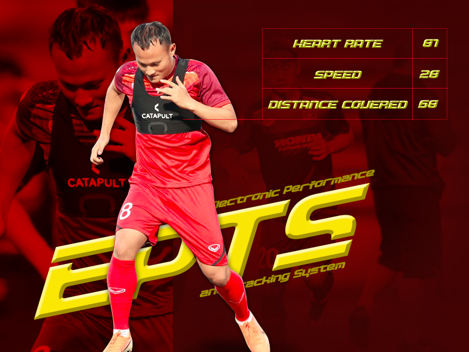
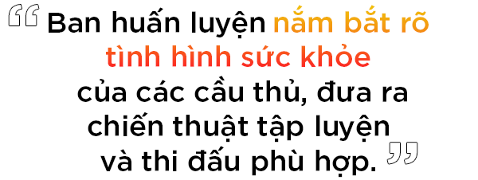
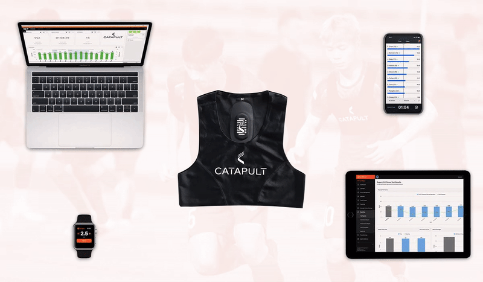
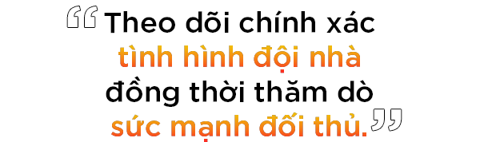
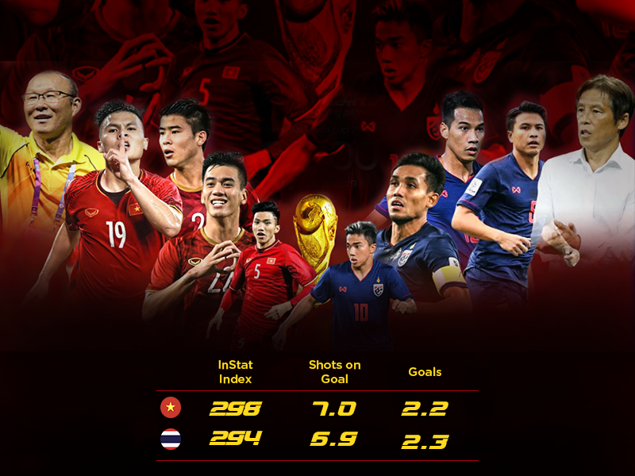
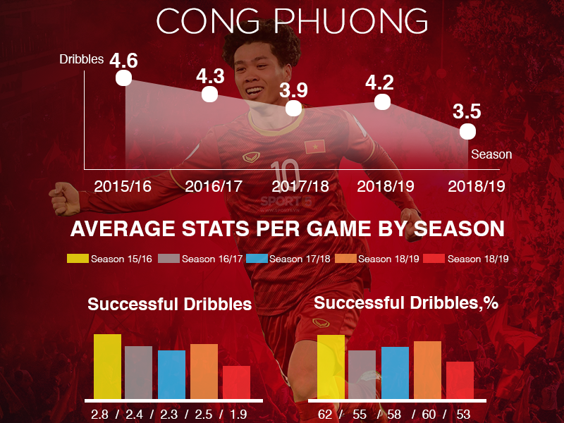
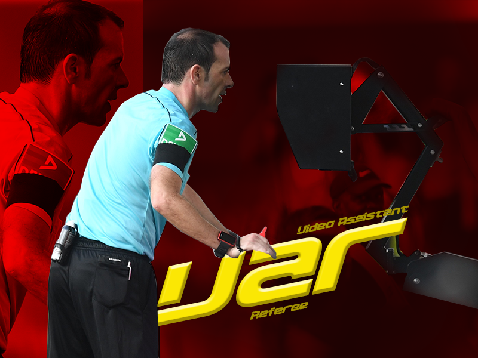
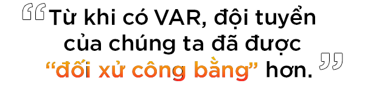

Những năm gần đây, dưới sự dẫn dắt tài tình của HLV Park Hang Seo, nền bóng đá Việt Nam đã bắt đầu có sự khởi sắc, cả về trình độ chuyên môn lẫn chiến thuật thi đấu. Đội tuyển quốc gia liên tiếp đạt được thành tích cao tại các giải đấu mang tầm châu lục. Ngoài yếu tố về con người, việc áp dụng công nghệ vào bóng đá cũng góp một phần không nhỏ vào thắng lợi vẻ vang này. Vậy những công nghệ này là gì mà "ghê gớm" thế nhỉ?
*Số liệu trên hình chỉ mang tính chất minh hoạ
Chắc một vài bạn cũng để ý, kể từ giải King's Cup 2019, các tuyển thủ đã bắt đầu thi đấu với hai lớp áo trên người, lớp áo lót màu đen bên trong được tích hợp hàng loạt cảm biến tân tiến. Với Việt Nam ta thì mới, chứ thật ra công nghệ này đã được các cầu thủ quốc tế sử dụng từ lâu trong các buổi tập luyện và thi đấu.

Những chiếc áo đặc biệt này do Catapult Sports cung cấp, trên áo có một thiết bị được gọi là Electronic Performance and Tracking System (EPTS - Tạm dịch: Hệ thống theo dõi và hiệu suất điện tử), được đặt trong một túi nhỏ chứa thiết bị định vị GPS và nhiều loại cảm biến khác, như gia tốc kế, hay thiết bị đo nhịp tim,...
Nhiệm vụ của EPTS là theo dõi tổng quãng đường mà cầu thủ đã di chuyển trên sân, tốc độ di chuyển, cũng như theo dõi tình trạng nhịp tim,... của các cầu thủ. Sau đó truyền thông tin về một thiết bị theo dõi khác ở bên ngoài sân để thống kê lại.
Nhờ những chỉ số này mà ban huấn luyện có thể nắm bắt rõ tình hình sức khỏe của các cầu thủ, đưa ra chiến thuật tập luyện và thi đấu phù hợp hơn cho từng vị trí trên sân.


Dù những chiếc áo này lợi hại như vậy, nhưng trước đây thì chỉ các câu lạc bộ có tiềm lực tài chính mới "dám" đầu tư loại áo này. May thay công nghệ dần phát triển, chi phí sản xuất cho những chiếc áo này đã tốt hơn nên các cầu thủ Việt được đầu tư khá đầy đủ.
Dĩ nhiên loại áo thông minh này cũng được thiết kế đặc biệt với khả năng chống nước tốt, để chống mồ hôi từ cầu thủ hoặc khi thi đấu dưới trời mưa. Dung lượng pin tích hợp đủ cho hoạt động liên tục trong nhiều giờ cùng một thiết bị truyền tín hiệu.
Việc quan sát từ một góc, nghiên cứu báo đài hay các video quay lại đôi khi vẫn chưa đủ để ban huấn luyện có cái nhìn bao quát nhất tất cả cầu thủ trên sân. Thế nên lúc này mới cần một ngân hàng thông tin điện tử nhằm theo dõi chính xác tình hình của đội nhà, đồng thời cũng thăm dò được sức mạnh của đối thủ.

VFF từng mua một phần mềm như vậy, đó là InStat vào năm 2016. Dữ liệu của các trận đấu sẽ được các chuyên gia từ InStat bóc tách, phân tích và đưa ra các chỉ số quan trọng như di chuyển, tấn công, phòng thủ,... Điều này giúp ban huấn luyện dễ dàng hơn trong việc đưa ra các chiến thuật hợp lý trong các trận đấu tiếp theo

Nhiều nguồn tin xác nhận Liên đoàn bóng đá Việt Nam phải trả khoảng 20.000 USD/năm (gần 500 triệu đồng) để có được công nghệ phục vụ cho các đội tuyển. Một khoản đầu tư mới nghe thì thấy khá "đắt" nhưng "xắt ra miếng". Kết quả mà bóng đá Việt Nam đạt được trong hai năm qua đã cho thấy tính hiệu quả của InSat.
Bên cạnh đó, đội tuyển Việt Nam còn được đầu tư thêm những bộ đồ công nghệ cao OptimEye X4 và phòng giả lập 360 độ. Những công cụ này sẽ giúp xây dựng ngân hàng thông tin các cầu thủ Việt, theo dõi chế độ dinh dưỡng cho từng cầu thủ,... nhằm phục vụ cho những kế hoạch dài hơi hơn của bóng đá Việt Nam.

VAR là tên viết tắt của công nghệ hỗ trợ trọng tài bằng video (Video Assistant Referee). Công nghệ này áp dụng để giúp các trọng tài bóng đá có thể đưa ra những quyết định chuẩn hơn, nhờ được xem lại các hình ảnh chính xác về các tình huống diễn ra trên sân.

Có thể nhiều bạn sẽ thắc mắc vì sao công nghệ VAR lại giúp ích cho bóng đá Việt Nam phải không nào?
Lý do mình nhắc đến VAR ở đây là bởi trong thời gian trước, khi các giải đấu ở châu Á chưa được áp dụng VAR, các đội tuyển của chúng ta thường gặp nhiều tình huống bất lợi từ các quyết định của các trọng tài. Nhưng từ khi có VAR, chúng ta đã được "đối xử công bằng" hơn.

Không nói đây cho xa, tại Vòng chung kết U23 châu Á, VAR đã giúp U23 Việt Nam đã thoát khỏi một quả penalty trong trận gặp U23 UAE tối 10/1/2020. Hay trước đó là tại trận tứ kết giải Asian Cup 2019, VAR đã đem đến nhiều tình huống "cứu thua" cho đội tuyển Việt Nam khi đối đầu với Nhật Bản.
Mặc dù có nhiều tranh cãi nổ ra xoay quanh việc có nên sử dụng công nghệ VAR hay không, nhưng một thực tế không thể phủ nhận là công nghệ này đã giúp cho các trận đấu diễn ra công bằng, minh bạch hơn.
Công nghệ ngày càng phát triển, len lỏi vào khắp các ngành nghề, lĩnh vực, cụ thể ở đây là bóng đá. Việc áp dụng công nghệ giúp tạo ra một sân chơi công bằng hơn, cầu thủ và ban huấn luyện dễ dàng hơn trong việc luyện tập và thi đấu.